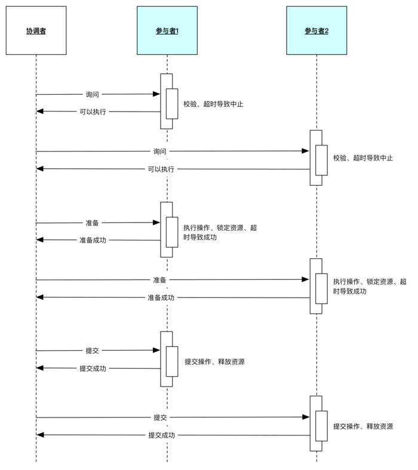

分布式基础（十二）——分布式理论之分布式事务：3PC
一、简介
在二阶段协议中，事务参与者在投票阶段，如果同意提交事务，则会锁定资源，此时任何其他访问该资源的请求将处于阻塞状态。
正因为这个原因，三阶段协议（Three-phase commit protocol, 3PC）对二阶段协议进行了改进：
- 一方面引入超时机制，解决资源阻塞问题；
- 另一方面新增一个询问阶段（CanCommit），提前确认下各个参与者的状态是否正常。

二、协议详解
我们先来看下三阶段提交协议的成功场景：

2.1 询问阶段（CanCommit）
询问阶段，事务协调者向事务参与者发送 CanCommit 请求，参与者如果可以提交就返回 Yes 响应，否则返回 No 响应。这样的话，询问阶段就可以确保尽早的发现无法执行操作的参与者节点，提升效率。该阶段参与者也不会取锁定资源。
- 事务协调者发送事务询问指令（canCommit），询问事务参与者是否可以提交事务；
- 参与者如果可以提交就返回 Yes 响应，否则返回 No 响应，不需要做真正的操作。
对于事务协调者，如果询问阶段有任一参与者返回NO或超时，则协调者向所有参与者发送abort指令。
对于返回NO的参与者，如果在指定时间内无法收到协调者的abort指令，则自动中止事务。
2.2 准备阶段（PreCommit）
事务协调者根据事务参与者在询问阶段的响应，判断是执行事务还是中断事务：
- 如果询问阶段所有参与者都返回YES，则协调者向参与者们发送预执行指令（preCommit），参与者接受到preCommit指令后，写redo和undo日志，执行事务操作，占用资源，但是不会提交事务；
- 参与者响应事务操作结果，并等待最终指令：提交（doCommit）或中止（abort）。
2.3 提交阶段（DoCommit）
- 如果每个参与者在准备阶段都返回ACK确认（即事务执行成功），则协调者向参与者发起提交指令（doCommit），参与者收到指令后提交事务，并释放锁定的资源，最后响应ACK；
- 如果任意一个参与者在准备阶段返回NO（即执行事务操作失败），或者协调者在指定时间没收到全部的ACK响应，就会发起中止（abort）指令，参与者取消已经变更的事务，执行undo日志，释放锁定的资源。
当参与者响应ACK后，即使在指定时间内没收到doCommit指令，也会进行事务的最终提交；
一旦进入提交阶段，即使因为网络原因导致参与者无法收到协调者的doCommit或Abort请求，超时时间一过，参与者也会自动完成事务的提交。
三、优缺点
优点：
- 增加了一个询问阶段，询问阶段可以确保尽早的发现无法执行操作的参与者节点，提升效率；
- 在准备阶段成功以后，协调者和参与者执行的任务中都增加了超时，一旦超时，参与者都会继续提交事务，默认为成功，降低了阻塞范围。
缺点：
- 如果准备阶段执行事务后，某些参与者反馈执行事务失败，但是由于出现网络分区，导致这些参与者无法收到协调者的中止请求，那么由于超时机制，这些参与者仍会提交事务，导致出现不一致；
- 性能瓶颈，不适合高并发场景。
所以无论是 2PC 还是 3PC，当出现网络分区且不能及时恢复时， 都不能保证分布式系统中的数据 100% 一致。
四、总结
三阶段提交协议，虽然针对二阶段提交协议的“协调者故障，参与者长期锁定资源”的痛点，通过引入了询问阶段和超时机制，来减少资源被长时间锁定的情况，但这也会导致集群各节点在正常运行的情况下，使用更多的消息进行协商，增加系统负载和响应延迟。也正是因为这些问题，三阶段提交协议很少被使用。